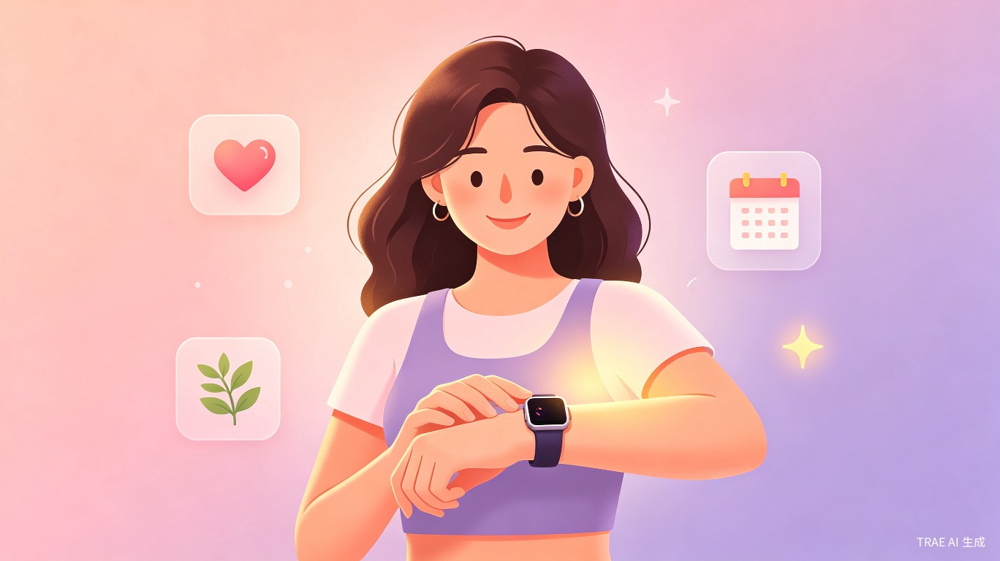
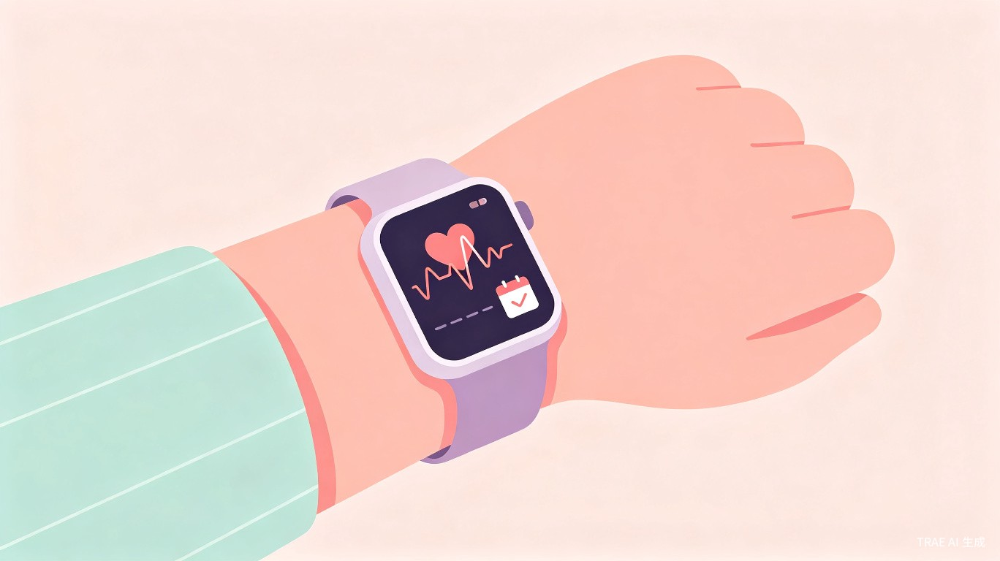
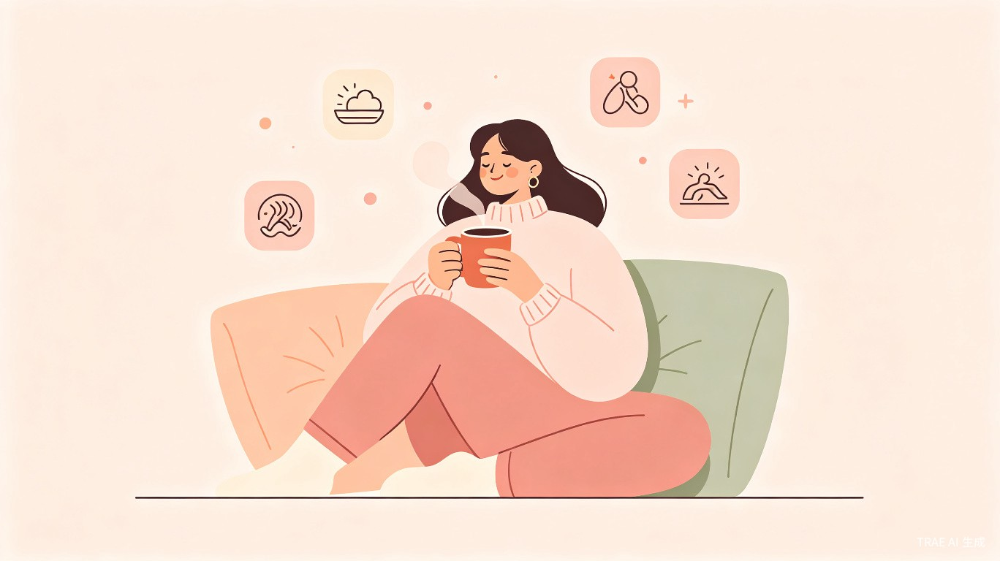

AI + 智能手表驱动的女生经期检测与健康养护 APP
用科技温柔守护每一位女性的身心健康
想解决什么问题：现代女性普遍面临经期不规律、痛经困扰、情绪波动大等健康问题，但市面上大多数经期 APP 仍停留在手动记录和简单预测阶段，无法做到真正的智能监测与个性化养护。
灵感来源：观察到身边许多女性朋友因为忙碌而忽略身体信号，智能手表已能采集心率、体温、血氧、睡眠等多维数据，结合 AI 分析能力，完全可以让经期管理从"被动记录"升级为"主动关怀"。
产品形态：一款与智能手表深度联动的移动端 APP，通过 AI 算法实时分析生理数据，实现经期智能预测、痛经预警、情绪关怀与个性化健康建议推送。


精准定位核心用户群体，深入洞察真实需求
15-35 岁的年轻女性，包括学生、职场新人、白领等。她们注重生活品质，习惯使用智能穿戴设备，对健康管理有一定意识，但缺乏系统化的经期养护工具。
日常佩戴场景：智能手表 24 小时佩戴，静默采集生理数据，无需用户额外操作。
经期前预警：APP 提前 3-5 天推送经期预测提醒，让用户做好准备。
痛经应急：检测到异常生理信号时，自动推送舒缓建议（如热敷、呼吸练习、饮食调整）。
情绪低谷期：在经前综合征（PMS）期间推送正念冥想、轻音乐、暖心语录等情绪关怀内容。
如果没有"悦己周期"，用户现在会遇到：
- 经期记录依赖手动输入，容易遗忘或记错
- 痛经来袭时毫无准备，影响工作和学习
- 健康数据分散在不同 APP 中，无法形成完整画像
- 缺乏基于个人数据的个性化建议，"千人一方"
- 情绪低谷期无人察觉，只能独自承受
商业价值与社会价值并重，创造可持续影响力
"悦己周期"不仅是一款工具，更是一种温柔的健康陪伴理念 —— 让每一位女性在每个月的特殊时刻，都能感受到被理解和被照顾。
切入女性健康管理蓝海市场，通过智能手表生态联动形成差异化竞争，具备会员订阅、健康商城、品牌联名等多元变现路径。
AI 自动分析替代手动记录，将经期预测准确率提升至 92% 以上，让用户从繁琐的健康管理中解放出来。
提升女性对自身健康的关注度和管理能力，减少因经期问题导致的工作学习效率下降，促进社会对女性生理健康的理解与包容。
首创"手表硬件 + AI 算法 + 情感化设计"三位一体的经期健康解决方案，建立技术壁垒与用户心智。
从数据采集到智能建议的完整闭环
通过智能手表实时采集心率变异性（HRV）、腕部皮肤温度、血氧饱和度、睡眠质量、活动量等多维生理信号。
基于深度学习模型分析生理数据模式，识别经期周期规律，预测下次经期时间，检测痛经风险与情绪波动趋势。
根据用户当前所处周期阶段（卵泡期、排卵期、黄体期、经期），推送定制化的饮食、运动、作息与情绪管理建议。
以温柔治愈的 UI 风格呈现数据洞察，支持日历视图、趋势图表、健康报告导出，以及社区互助功能。
无感监测：无需手动输入，手表自动采集数据，真正实现"零负担"健康管理。
痛经预警：通过 HRV 与体温变化提前 6-12 小时预测痛经发生概率，让用户提前做好准备。
情绪陪伴：在 PMS 期间自动切换"温柔模式"，推送舒缓内容与暖心提醒，像闺蜜一样陪伴。
周期养生：根据中医周期养生理论，结合现代营养学，提供"因时制宜"的饮食与运动方案。